7. Gestion de l'accès concurrent aux données
Nous avons jusqu'à maintenant utilisé des tables dont nous étions les seuls utilisateurs. Dans la pratique, sur une machine multi-utilisateurs, les données sont le plus souvent partagées entre différents utilisateurs. Se pose alors la question : Qui peut utiliser telle ou telle table et sous quelle forme (consultation, insertion, suppression, ajout, ...) ?
7.1. Création d'utilisateurs Firebird
Lorsque nous avons travaillé avec IB-Expert, nous nous sommes connectés en tant qu'utilisateur SYSDBA. On peut retrouver cette information dans les propriétés de la connexion ouverte au SGBD :
 |  |
A droite, on voit que l'utilisateur connecté est [SYSDBA]. Ce qu'on ne voit pas c'est son mot de passe [masterkey]. [SYSDBA] est un utilisateur particulier de Firebird : il a tous les droits sur tous les objets gérés par le SGBD. On peut créer de nouveaux utilisateurs avec IBExpert avec l'option [Tools / User Manager] ou l'icône suivante :

Nous obtenons la fenêtre de de gestion des utilisateurs :
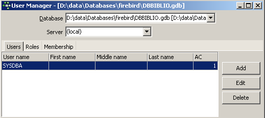
Le bouton [Add] permet de créer de nouveaux utilisateurs :

Créons ainsi les utilisateurs suivants :
nom | mot de passe |
ADMIN1 | admin1 |
ADMIN2 | admin2 |
SELECT1 | select1 |
SELECT2 | select2 |
UPDATE1 | update1 |
UPDATE2 | update2 |
7.2. Accorder des droits d'accès aux utilisateurs
Une base appartient à celui qui l'a créée. Les bases que nous avons créées jusqu'à maintenant appartenaient à l'utilisateur [SYSDBA]. Pour illustrer la notion de droits, créons (Database / Create Database) une nouvelle base de données sous l'identité [ADMIN1, admin1] :
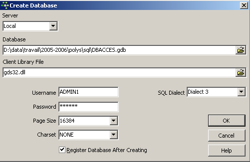
et enregistrons-la avec l'alias DBACCES (ADMIN1). L'utilisation d'alias permet d'ouvrir des connexions sur une même base en leur donnant des identifiants différents, ce qui permet de mieux les repérer dans l'explorateur de bases d'IBExpert. :
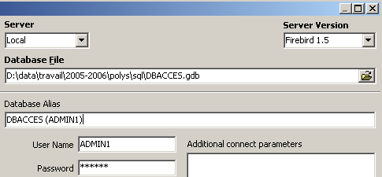 |  |
Créons maintenant les deux tables TA et TB suivantes :
Table TA
 |  |
Table TB
 |  |
Ces tables n'ont pas de lien entre elles.
Avec IB-Expert, créons une seconde connexion à la base [DBACCES], cette fois-ci sous le nom [ADMIN2 / admin2]. Nous utilisons pour cela l'option [Database / Register Database] :
 | 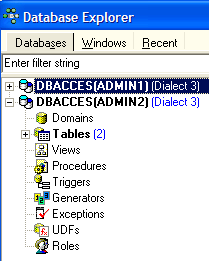 |
Positionnons-nous sur DBACCES(ADMIN2) et ouvrons un éditeur SQL (Shift + F12) :
 |
Nous aurons l'occasion d'utiliser diverses connexions sur la même base [DBACCES]. Pour chacune d'entre-elles, nous aurons un éditeur SQL. En [1], l'éditeur SQL indique l'alias de la base connectée. Utilisez cette indication pour savoir dans quel éditeur SQL vous êtes. Cela va avoir son importance car nous allons créer des connexions qui n'auront pas les mêmes droits d'accès sur les objets de la base.
Demandons le contenu de la table TA :
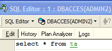
Nous obtenons le message d'erreur suivant :

Que signifie-t-il ? La base [DBACCESS] a été créée par l'utilisateur [ADMIN1] et est donc sa propriété. Seul lui a accès aux différents objets de cette base. Il peut accorder des droits d'accès à d'autres utilisateurs avec la commande SQL GRANT. Celle-ci a diverses syntaxes. L'une d'elles est la suivante :
GRANT privilège1, privilège2, ...| ALL PRIVILEGES ON table/vue TO utilisateur1, utilisateur2, ...| PUBLIC [ WITH GRANT OPTION ] | |
accorde des privilèges d'accès privilègei ou tous les privilèges (ALL PRIVILEGES) sur la table ou vue aux utilisateurs utilisateuri ou à tous les utilisateurs ( PUBLIC ). La clause WITH GRANT OPTION permet aux utilisateurs ayant reçu les privilèges de les transmettre à leur tour à d'autres utilisateurs. |
Parmi les privilèges privilègei qui peuvent être accordés se trouvent les suivants :
droit d'utiliser la commande DELETE sur la table ou vue. | |
droit d'utiliser la commande INSERT sur la table ou vue | |
droit d'utiliser la commande SELECT sur la table ou vue | |
droit d'utiliser la commande UPDATE sur la table ou vue. Ce droit peut être restreint à certaines colonnes par la syntaxe : GRANT update ( col1, col2, ...) ON table/vue TO utilisateur1, utilisateur2, ...| PUBLIC [ WITH GRANT OPTION ] |
Donnons le droit à l'utilisateur [ADMIN2] le droit SELECT sur la table TA. Seul le propriétaire de la table peut donner ce droit, c.a.d. ici [ADMIN1]. Positionnons-nous sur la connexion DBACCES(ADMIN1) et ouvrons un nouvel éditeur SQL (Shift+F12) :

Par la suite, nous allons passer d'un éditeur SQL à l'autre. Pour s'y retrouver, on peut utiliser l'option [Windows] du menu :

Ci-dessus, on voit les deux éditeurs SQL, chacun associé à un utilisateur particulier. Revenons sur l'éditeur SQL(ADMIN1) et émettons la commande suivante :

Puis validons-la par un COMMIT :

Ceci fait, passons dans l'éditeur de l'utilisateur ADMIN2 pour refaire le SELECT qui avait échoué :
Nous obtenons le message d'erreur suivant :
L'utilisateur [ADMIN2] n'a toujours pas le droit de consulter la table [TA]. En fait, il semble que les droits d'un utilisateur soient chargés au moment où il se connecte. [ADMIN2] aurait alors toujours les mêmes droits qu'au début de sa connexion, c'est à dire aucun. Vérifions-le. Déconnectons l'utilisateur [ADMIN2] :
- se placer sur sa connexion
- demander la déconnexion en cliquant droit sur la connexion et en prenant l'option [Deconnect from database] ou (Shift + Ctrl + D)

Si un panneau demande un [COMMIT], faites le [COMMIT]. Puis reconnectons l'utilisateur [ADMIN2] en prenant l'option [Reconnect] ci-dessus. Ceci fait, revenons sur l'éditeur SQL (ADMIN2) et rejouons la requête SELECT qui a échoué :
On obtient alors le résultat suivant :

Cette fois-ci ADMIN2 peut consulter la table TA grâce au droit SELECT que lui a donné son propriétaire ADMIN1. Normalement c'est le seul droit qu'il a. Vérifions-le. Toujours dans l'éditeur SQL (ADMIN2) :
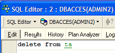 | 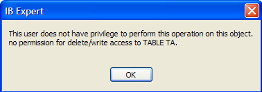 |
L'écran de droite montre que ADMIN2 n'a pas le droit DELETE sur la table TA.
Revenons dans l'éditeur SQL(ADMIN1) pour donner davantage de droits à l'utilisateur ADMIN2. Nous émettons successivement les deux commandes suivantes :
 |  |
- la première commande donne à l'utilisateur ADMIN2 tous les droits d'accès à la table [TA] avec de plus la possibilité d'accorder lui aussi des droits (WITH GRANT OPTION)
- la deuxième commande valide la précédente
Ceci fait, comme fait précédemment renouvelons la connexion de l'utilisateur [ADMIN2] (Deconnect / Reconnect) puis dans l'éditeur SQL(ADMIN2) tapons les commandes suivantes :
 |  |  |
ADMIN2 a pu supprimer toutes les lignes de la table TA. Annulons cette suppression avec un ROLLBACK :
 | |  |
Vérifions que ADMIN2 peut à son tour donner des droits sur la table TA.
 |  |
Ouvrons maintenant une connexion sur la base [DBACCES] (Database / Register database) sous le nom [SELECT1 / select1], l'un des utilisateurs créés précédemment puis double-cliquons sur le lien ainsi créé dans [Database Explorer] :
 |  |
Positionnons-nous sur cette nouvelle connexion et ouvrons un nouvel éditeur SQL (Shift + F12) pour y taper les commandes suivantes :
 |  |
L'utilisateur SELECT1 a bien le droit SELECT sur la table TA. A-t-il la possibilité de transmettre ce droit à l'utilisateur SELECT2 ?
 |
L'opération a échoué parce que l'utilisateur SELECT1 n'a pas reçu le droit de transmettre le droit SELECT qu'il a reçu de l'utilisateur ADMIN2. Il aurait fallu pour cela que l'utilisateur ADMIN2 utilise la clause WITH GRANT OPTION dans son ordre SQL GRANT. Les règles de transmission sont simples :
- un utilisateur ne peut transmettre que les droits qu'il a reçus et pas plus
- il ne peut les transmettre que s'il les a reçus avec le privilège [WITH GRANT OPTION]
Un droit accordé peut être retiré avec l'ordre REVOKE :
REVOKE privilège1, privilège2, ...| ALL PRIVILEGES ON table/vue FROM utilisateur1, utilisateur2, ...| PUBLIC | |
supprime des privilèges d'accès privilègei ou tous les privilèges (ALL PRIVILEGES) sur la table ou vue aux utilisateurs utilisateuri ou à tous les utilisateurs ( PUBLIC ). |
Essayons. Revenons dans l'éditeur SQL d'ADMIN2 pour enlever le droit SELECT que nous avons donné à l'utilisateur SELECT1 :
 |  |
Déconnectons puis reconnectons la connexion de l'utilisateur SELECT1. Puis dans l'éditeur SQL (SELECT1) demandons le contenu de la table TA :
 |  |
L'utilisateur SELECT1 a bien perdu son droit de lecture de la table TA. On notera que c'est ADMIN2 qui lui avait donné ce droit et c'est ADMIN2 qui le lui a retiré. Si ADMIN1 essaie de le lui retirer, aucune erreur n'est signalée mais on peut constater ensuite que SELECT1 a gardé son droit SELECT.
Un droit peut être donné à tous avec la syntaxe : GRANT droit(s) ON table / vue TO PUBLIC. Donnons ainsi le droit SELECT sur la table TA à tous. On peut utiliser ADMIN1 ou ADMIN2 pour le faire. Nous utilisons ADMIN2 :
 |  |
Créons une connexion sur la base avec l'utilisateur USER1 / user1 :
 |  |
Avec la connexion DBACCES(USER1), ouvrons un nouvel éditeur SQL (Shift + F12) et tapons les commandes suivantes :
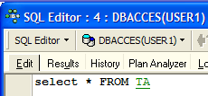 |  |
L'utilisateur USER1 a bien le droit SELECT sur la table TA.
7.3. Les transactions
7.3.1. Niveaux d'étanchéité
Nous quittons maintenant le problème des droits d'accès aux objets d'une base de données pour aborder celui des accès concurrents à ces objets. Deux utilisateurs ayant les droits d'accès suffisants à un objet de la base, une table par exemple, veulent l'utiliser en même temps. Que se passe-t-il ?
Chaque utilisateur travaille au sein d'une transaction. Une transaction est une suite d'ordres SQL qui est exécutée de façon "atomique" :
- soit toutes les opérations réussissent
- soit l'une d'elles échoue et alors toutes celles qui ont précédé sont annulées
Au final, les opérations d'une transaction ont soit toutes été appliquées avec succès soit aucune n'a été appliquée. Lorsque l'utilisateur a lui-même la maîtrise de la transaction (le cas dans tout ce document), il valide une transaction par un ordre COMMIT ou l'annule par un ordre ROLLBACK.
Chaque utilisateur travaille dans une transaction qui lui appartient. On distingue habituellement quatre niveaux d'étanchéité entre les différents utilisateurs :
- Uncommitted Read
- Committed Read
- Repeatable Read
- Serializable
Uncommitted Read
Ce mode d'isolation est également appelé "Dirty Read". Voici un exemple de ce qui se peut se passer dans ce mode :
- un utilisateur U1 commence une transaction sur une table T
- un utilisateur U2 commence une transaction sur cette même table T
- l'utilisateur U1 modifie des lignes de la table T mais ne les valide pas encore
- l'utilisateur U2 "voit" ces modifications et prend des décisions à partir de ce qu'il voit
- l'utilisateur annule sa transaction par un ROLLBACK
On voit qu'en 4, l'utilisateur U2 a pris une décision à partir de données qui s'avèreront fausses ultérieurement.
Committed Read
Ce mode d'isolation évite l'écueil précédent. Dans ce mode, l'utilisateur U2 à l'étape 4 ne "verra" pas les modifications apportées par l'utilisateur U1 à la table T. Il ne les verra qu'après que U1 ait fait un COMMIT de sa transaction.
Dans ce mode, également appelé "Unrepeatable Read", on peut rencontrer les situations suivantes :
- un utilisateur U1 commence une transaction sur une table T
- un utilisateur U2 commence une transaction sur cette même table T
- l'utilisateur U2 fait un SELECT pour obtenir la moyenne d'une colonne C des lignes de T vérifiant une certaine condition
- l'utilisateur U1 modifie (UPDATE) certaines valeurs de la colonne C de T et les valide (COMMIT)
- l'utilisateur U2 refait le même SELECT qu'en 3. Il découvrira que la moyenne de la colonne C a changé à cause des modifications faites par U1.
Maintenant l'utilisateur U2 ne voit que les modifications "validées" par U1. Mais alors qu'il reste dans la même transaction, deux opérations identiques 3 et 5 donnent des résultats différents. Le terme "Unrepeatable Read" désigne cette situation. C'est une situation ennuyeuse pour quelqu'un qui désire avoir une image stable de la table T.
Repeatable Read
Dans ce mode d'isolation, un utilisateur est assuré d'avoir les mêmes résultats pour ses lectures de la base tant qu'il reste dans la même transaction. Il travaille sur une photo sur laquelle ne sont jamais répercutées les modifications apportées par les autres transactions, mêmes validées. Il ne verra celles-ci que lorsque lui-même terminera sa transaction par un COMMIT ou ROLLBACK.
Ce mode d'isolation n'est cependant pas encore parfait. Après l'opération 3 ci-dessus, les lignes consultées par l'utilisateur U2 sont verrouillées. Lors de l'opération 4, l'utilisateur U1 ne pourra pas modifier (UPDATE) les valeurs de la colonne C de ces lignes. Il peut cependant rajouter des lignes (INSERT). Si certaines des lignes ajoutées vérifient la condition testée en 3, l'opération 5 donnera une moyenne différente de celle trouvée en 3 à cause des lignes rajoutées.
Pour résoudre ce nouveau problème, il faut passer en isolation "Serializable".
Serializable
Dans ce mode d'isolation, les transactions sont complètement étanches les unes des autres. Il assure que le résultat de deux transactions menées simultanément donneront le même résultat que si elles étaient faites l'une après l'autre. Pour arriver à ce résultat, lors de l'opération 4 où l'utilisateur U1 veut ajouter des lignes qui changeraient le résultat du SELECT de l'utilisateur U1, il en sera empêché. Un message d'erreur lui indiquera que l'insertion n'est pas possible. Elle le deviendra lorsque l'utilisateur U2 aura validé sa transaction.
Les quatres niveaux SQL d'isolation des transactions ne sont pas disponibles dans tous les SGBD. Firebird fournit les niveaux d'isolation suivants :
- snapshot : mode d'isolation par défaut. Correspond au mode "Repeatable Read" du standard SQL.
- committed read : correspond au mode "committed read" du standard SQL
Ce niveau d'isolation est fixé par la commande SET TRANSACTION :
SET TRANSACTION [READ WRITE | READ ONLY] [WAIT|NOWAIT] ISOLATION LEVEL [SNAPSHOT | READ COMMITTED] | |
les mots clés soulignés sont les valeurs par défaut READ WRITE : la transaction peut lire et écrire READ ONLY : la transaction ne peut que lire WAIT : en cas de conflit entre deux transactions, celle qui n'a pu faire son opération attend que l'autre transaction soit validée. Elle ne peut plus émettre d'ordres SQL. NOWAIT : la transaction qui n'a pu faire son opération n'est pas bloquée. Elle reçoit un message d'erreur et elle peut continuer à travailler. ISOLATION LEVEL [SNAPSHOT | READ COMMITTED] : niveau d'isolation |
Essayons. Dans l'éditeur SQL(ADMIN1) on tape la commande SQL suivante :

On voit qu'elle n'a pas été autorisée. On ne sait pourquoi...
IB-Expert permet de fixer d'une autre façon le mode d'isolation. Cliquons droit sur la connexion DBACCES(ADMIN1) pour prendre l'option [Database Registration Info] :
 |  |
L'écran de droite montre la présence d'une option [Transactions]. Elle va nous permettre de fixer le niveau d'isolation des transactions. Nous le fixons ici à [snapshot]. Nous faisons de même avec la connexion DBACCES(ADMIN2).
7.3.2. Le mode snapshot
Examinons le niveau d'isolation snapshot qui est le mode d'isolation par défaut de Firebird. Lorsque l'utilisateur commence une transaction, une photo est prise de la base. L'utilisateur va alors travailler sur cette photo. Chaque utilisateur travaille ainsi sur une photo de la base qui lui est propre. S'il apporte des modifications à celle-ci, les autres utilisateurs ne les voient pas. Ils ne les verront que lorsque l'utilisateur les ayant faites les aura validées par un COMMIT.
On peut considérer deux cas :
- un utilisateur lit la table (select) pendant qu'un autre est en train de la modifier (insert, update, delete)
- les deux utilisateurs veulent modifier la table en même temps
7.3.2.1. Principe de la lecture cohérente
Soient deux utilisateurs U1 et U2 travaillant sur la même table TAB :
La transaction de l'utilisateur U1 commence au temps T1a et finit au temps T1b.
La transaction de l'utilisateur U2 commence au temps T2a et finit au temps T2b.
U1 travaille sur une photo de TAB prise au temps T1a. Entre T1a et T1b, il modifie TAB. Les autres utilisateurs n'auront accès à ces modifications qu'au temps T1b, lorsque U1 fera un COMMIT.
U2 travaille sur une photo de TAB prise au temps T2a, donc la même photo qu'utilisée par U1 (si d'autres utilisateurs n'ont pas modifié l'original entre-temps). Il ne "voit" pas les modifications qu'a pu apporter l'utilisateur U1 sur TAB. Il ne pourra les voir qu'au temps T1b.
Illustrons ce point sur notre base [DBACCES]. Nous allons faire travailler simultanément les deux utilisateurs [ADMIN1] et [ADMIN2]. Plaçons-nous sur la connexion DBACCES(ADMIN1) et dans l'éditeur SQL d'ADMIN1, faisons les opérations suivantes :
 |  |  |
ADMIN1 a modifié la ligne n° 2 de la table TA mais n'a pas encore validé (COMMIT) son opération. L'utilisateur ADMIN2 fait alors un SELECT sur la table TA (on passe dans l'éditeur SQL d'ADMIN2). Nous sommes avant le temps T2a de l'exemple.
 |  |
Retour dans l'éditeur SQL d'ADMIN1 qui valide son ajout :
 |
Retour dans l'éditeur SQL d'ADMIN2 pour refaire le SELECT :
|  |
ADMIN2 voit les modifications apportées par ADMIN1. Dans le mode snapshot, une transaction ne voit pas les modifications apportées par les autres transactions tant que ces dernières ne sont pas terminées.
7.3.2.2. Modification simultanée par deux transactions d'un même objet de la base
Prenons un exemple en comptabilité : U1 et U2 travaillent sur des comptes. U1 débite comptex d'une somme S et crédite comptey de la même somme. Il va le faire en plusieurs étapes :
U1 démarre une transaction au temps T1a, débite comptex au temps T1b, crédite comptey au temps T1c et valide les deux opérations au temps T1d. Supposons par ailleurs que U2 veuille faire la même chose, commence sa transaction au temps T2a et la termine au temps T2d selon le schéma suivant :
--------+----------+----+----+-------+------+-----+-------+---------
T1a T1b T2a T1c T2b T1d T2c T2d
Au temps T2, une photo de la table des comptes est prise pour U2. Elle est cohérente d'après le principe du snapshot. U2 voit l'état initial des comptes comptex et comptey car U1 n'a pas encore validé ses opérations.
Supposons que comptex ait un solde initial de 1000 € et que chacun des utilisateurs U1 et U2 veuillent le débiter de 100 €.
- au temps T1b, U1 décrémente comptex de 100 € et le passe donc à 90 €. Cette opération ne sera validée qu'au temps T1d.
- au temps T2b, U2 voit comptex avec 1000 € (principe de lecture cohérente) et le décrémente de 100 € et le passe donc à 90 €.
- au final, au temps T2d lorsque tout aura été validé, comptex aura un solde de 90 € au lieu des 80 € attendus.
La solution à ce problème est d'empêcher U2 de modifier comptex tant que U1 n'a pas terminé sa transaction. U2 sera ainsi bloqué jusqu'au temps T1d. Le mode snapshot fournit ce mécanisme.
Illustrons-le avec la base DBACCES. ADMIN1 commence une transaction dans son éditeur SQL(ADMIN1) :
 |  |  |  |
Nous avons commencé par faire un COMMIT pour être sûrs de démarrer une nouvelle transaction. Puis nous avons supprimé la ligne n° 4. La transaction n'a pas encore été validée.
ADMIN2 commence à son tour une transaction dans son éditeur SQL(ADMIN2) :
 |  |
L'écran de droite montre que ADMIN2 a voulu modifier la ligne n° 4. On lui a répondu que ce n'était pas possible parce que quelqu'un d'autre l'avait déjà modifiée mais pas encore validé cette modification.
Revenons dans l'éditeur SQL(ADMIN1) pour faire le COMMIT :

Revenons dans l'éditeur SQL(ADMIN2) pour rejouer la commande UPDATE :
 |  |
 |  |
L'opération UPDATE se passe bien alors même que la ligne n° 4 n'existe plus comme le montre le SELECT qui suit. C'est à ce moment qu'ADMIN2 découvre que la ligne n'existe plus.
7.3.2.3. Le mode Repeatable Read
Illustrons maintenant le mode "Repeatable Read". Ce niveau d'isolation est fourni par le mode "snapshot". Il assure à une transaction d'obtenir toujours le même résultat lors de la lecture de la base.
Commençons par travailler avec l'éditeur SQL d'ADMIN2 :
 |  |  |
 |  |
Passons maintenant à l'éditeur SQL d'ADMIN1 :
 |  |  |
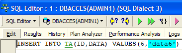 |  |  |
 | 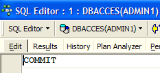 |
L'utilisateur ADMIN1 a ajouté deux lignes et validé sa transaction. Revenons maintenant sur l'éditeur SQL(ADMIN2) pour rejouer le SELECT SUM :
 |  |
On voit qu'ADMIN2 ne voit pas les ajouts de lignes d'ADMIN1 bien qu'elles aient été validées par un COMMIT. Le SELECT SUM donne le même résultat qu'avant les ajouts. C'est le principe du Repeatable Read.
Maintenant, toujours dans l'éditeur SQL (ADMIN2), validons la transaction par un COMMIT puis rejouons le SELECT SUM :
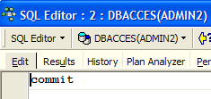 |  |  |
Les lignes ajoutées par ADMIN1 sont désormais prises en compte.
7.3.3. Le mode Committed Read
Illustrons maintenant le mode "Committed Read". Ce niveau d'isolation est analogue à celui du snapshot sauf en ce qui concerne le "Repeatable Read".
Nous commençons par changer le niveau d'isolation des transactions des deux connexions.
- nous déconnectons les deux utilisateurs ADMIN1 et ADMIN2
- nous changeons le niveau d'isolation de leurs transactions

- nous reconnectons les utilisateurs ADMIN1 et ADMIN2
Nous reprenons maintenant l'exemple précédent qui illustrait le "Repeatable Read" afin de montrer que nous n'avons plus le même comportement. Commençons par travailler avec l'éditeur SQL d'ADMIN2 :
| | |
| |
Passons maintenant à l'éditeur SQL d'ADMIN1 :
| | |
| |
|
L'utilisateur ADMIN1 a ajouté deux lignes et validé sa transaction. Revenons maintenant sur l'éditeur SQL(ADMIN2) pour rejouer le SELECT SUM :
|  |
Le SELECT SUM ne donne pas le même résultat qu'avant les ajouts faits par ADMIN1. C'est la différence entre les modes snapshot et read committed.